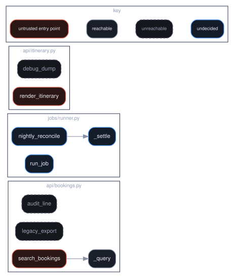

Not recorded yet. The lesson below is complete and runnable today — the video is added later without touching this page.
recordings/B2.5.mp4A finding in dead code costs the same to triage as one on the login path.
Stage 10: decide whether an external caller can actually reach the sink before anyone is paged.
Build a call graph from entry points and partition findings into reachable, unreachable and unknown.
“Run on Kaggle” opens the notebook in your own Kaggle account as a new kernel. The notebook carries no procedure: it clones this repository — shallow and sparse, the skills directory only, about three seconds — and runs skills/appsec/appsec-vuln-audit/scripts/appsec_vuln_audit.py out of it. Switch Internet on in the notebook settings first; Kaggle gates that on a verified phone number, and without one you can attach the dataset cybercommons/cyber-commons-skills instead. The copy is yours to edit and re-run, and nothing is written back here.
New here? A0.1 walks the whole mechanism and runs it on itself.
Function B — Application Security with an AI SDLC → The AI SDLC: an Agentic AppSec Pipeline, Before and After Deploy · AI for Security
Builds on B2.4 · Deduplication and contextual verification.
| Tools used | CodeQL, tree-sitter, GLM-4.6, Claude Sonnet 5 |
What it covers. Build a call graph from entry points and partition findings into reachable, unreachable and unknown.
Why a security engineer needs it. A finding in dead code costs the same to triage as one on the login path. The control it builds is: stage 10: decide whether an external caller can actually reach the sink before anyone is paged.
This is a control lesson: it builds the mechanism, then breaks it, so you can see what the control is actually load-bearing for rather than taking the claim on trust.
The finding is real and the code is dead — a true positive about the code and a false positive about the risk. Telling those apart needs a call graph, a call graph needs the syntax tree, and the tree's own blind spot is the third bucket everyone collapses into the second.
At CyberTravels. The finding is real and nothing in CyberTravels' booking service calls the function it landed in. The syntax tree can prove that for three of them, and for the nightly ledger job it cannot — which is the finding, not a gap in the report.
grep says ast says
"report" appears FunctionDef report <- a node
in 14 files Call report(...) <- an edge, owned by the
function it sits inside
nodes + edges, walked from the entry points:
@route handler --> _query REACHABLE, keeps its severity
legacy_export (no caller) UNREACHABLE
audit_line (no caller) -> true about the code
debug_dump (no caller) -> FALSE about the risk
jobs/runner.py: handler = getattr(HANDLERS, name)
return handler(arg)
run_job UNKNOWN
nightly_reconcile -> not dead.
_settle undecided.
the third bucket is not a rounding error: _settle runs a SQL
update, and a two-bucket pipeline reports it as clean
Stage 10 — Feasibility filtering. The last stage of Phase 3, and the one that decides whether anyone gets paged.
A verified finding is a real bug in the code. It is not necessarily a real risk, because the code may be unreachable: dead code, a test fixture, an internal function no external caller can drive, a branch behind a feature flag that has been off for two years.
Triaging an unreachable finding costs exactly as much as triaging one on the login path, and there are usually far more of them. So this stage partitions findings into three buckets — and the third bucket is the honest one:
Reporting unknown as unreachable is how a pipeline quietly drops real bugs.
The largest single class in that unreachable bucket is dead code, and it is worth being precise about what is wrong with such a finding, because teams act on the wrong half.
The finding is a true positive about the code. The concatenation is there, the sink is real, and any reviewer who opens the file will agree. It is a false positive about the risk, because nothing untrusted reaches it. Two different claims, and only the second one is wrong.
You cannot answer it with grep. def report, report( and # report are the
same string to a regex, and a function called run appears in every file you
own. The question — which functions call this one — is about structure, so it
needs the abstract syntax tree.
Parsing gives you exactly the two node types the question needs:
| AST node | what it gives you |
|---|---|
FunctionDef |
every function that exists, with its real nesting and its decorators |
Call |
every invocation, attributable to the function it sits inside |
Nodes and edges. Walk from the entry points and everything you reach is reachable; everything you do not is dead or undecided.
The resolver should be deliberately naive. Call.func is a Name for f()
and an Attribute for obj.f(); take .id or .attr and accept that two
methods with the same name merge. That over-reports reachability, which is the
safe error. A cleverer resolver that guesses wrong marks a live function dead,
and that error is silent.
This is the more useful half, and it is where the third bucket comes from. The AST resolves a literal call. It cannot resolve
handler = getattr(HANDLERS, name) # the callee is a runtime value
return handler(arg)
nor a dispatch dictionary, nor a handler a framework registers by decorator at
import time. None of those are unreachable — they are undecided, and the
rule that follows is the one that keeps the analysis honest: if a module
contains a call the AST could not follow, every unreached function in that
module is unknown, not unreachable.
Deleting is the right resolution for the genuinely dead ones, and it is the only one that cannot rot: a suppression is keyed to a file, a line and a rule, and none of those change when somebody wires the function back up.
Where you are in the pipeline.
[Ingestion & Mapping] ──> [Threat Modelling] ──> [Discovery] └─ stages 1-4 └─ stages 5-6 └─ stages 7-10 ──> [Dynamic Validation] ──> [Reporting] └─ stages 11-14 └─ stage 15
unknown into unreachableThe tempting simplification. It makes the queue shorter and it is how real bugs get dropped, because dynamic dispatch is exactly where framework-wired handlers live.
Stages 7 to 10 only ever shrink the list. That is a property worth enforcing rather than trusting, so the skill's contract carries a counts object and the rule that it must never increase.
A pipeline whose verified count exceeds its deduped count has invented findings somewhere after the audit stage — and that is far easier to do by accident than it sounds, because a verification step that expands one finding per code path looks perfectly reasonable from the inside.
skills/appsec/appsec-vuln-audit/SKILL.mdname: appsec-vuln-audit
description: >-
Audit code for vulnerabilities against a threat model, then deduplicate,
verify in context, and filter to what is actually reachable. Use when asked
to review code for security bugs, run or interpret SAST, check whether a
finding is a false positive, or reduce a noisy findings list to the ones
worth a human's time.
allowed-tools: Read, Grep, Glob, Bash
Covers stages 7–10. This is where findings are produced — and, more importantly, where most of them are thrown away.
The hard problem in application security is not finding candidate defects. It is that a scanner emits hundreds and a human can act on ten. Every stage after 7 exists to shrink the list without losing the true positives.
When you have a threat model and a budget, or when handed a raw findings file that nobody trusts. Stages 8–10 work on any findings list, including one from a third-party scanner.
| Input | Required | Notes |
|---|---|---|
threat_model + plan.selected |
preferred | from appsec-threat-model |
| Source worktree | yes | verification needs the code, not just the finding |
| Existing findings | optional | run stages 8–10 alone to clean a noisy list |
Stage 7 — Vulnerability auditing. For each selected threat, examine the
path from entry to sink and decide whether the weakness is actually present.
Record for each finding: cwe, file, line, unit, the evidence (the
specific expression that is unsafe), and the sanitiser you looked for and
did not find. A finding that cannot name what was missing is a guess.
Three generations of analysis, and they are complementary, not competing: grep-class pattern matching (fast, no dataflow), taint analysis (dataflow, no semantics), and model-assisted review (semantics, no guarantees). Use the cheapest one that can answer the question, and never let the third overrule the second on a question of reachability — the model does not execute the program.
Stage 8 — Deduplication. The same defect appears many times: once per
scanner, once per path, once per call site. Collapse on the defect identity
— (cwe, file, unit, sink_expression) — not on the message text. Keep the
count: occurrences is signal about how exposed the defect is.
Match paths by parent directory plus filename tail. Deduplicating on a bare basename silently merges two different files and loses a real finding.
Stage 9 — Contextual verification. For each surviving finding, look at the
surrounding code for the thing that makes it not-a-bug: a validator upstream, a
framework escaping the parameter, a type that cannot hold the payload, a caller
that only ever passes a constant. Record the verdict and the reason:
confirmed, mitigated_by <what>, or needs_human.
needs_human is a legitimate verdict and must stay available. A pipeline that
must decide will decide wrongly under uncertainty.
Stage 10 — Feasibility filtering. Drop what an attacker cannot actually reach: code behind a feature flag that is off, an admin-only path in a service with no admin, a sink whose input is fully constant. Record why each drop was made, because the next scan will rediscover it and the reason is what stops that work being repeated.
Input — the fixture committed at the top of scripts/appsec_vuln_audit.py. Edit it and re-run: the buckets, counts and verdicts below are derived from it, not hard-coded.
Output — the opening lines of a real run:
call graph:
http_get_report → ['load_report']
http_health → —
load_report → —
legacy_export → —
debug_dump → —
dispatch → —
The run continues past this. The script is the example: test_skills.py executes it on every build, so this block cannot drift from what the skill actually prints.
{
"findings": [
{"id": "str", "cwe": "CWE-89", "file": "str", "line": 0, "unit": "str",
"evidence": "str", "missing_control": "str",
"occurrences": 1, "verdict": "confirmed|mitigated|needs_human",
"verdict_reason": "str", "feasible": true, "confidence": 0.0}
],
"dropped": [{"id": "str", "stage": 8, "why": "str"}],
"counts": {"raw": 0, "deduped": 0, "verified": 0, "feasible": 0}
}
counts must be monotonically non-increasing across the four stages. If it is
not, the pipeline invented findings after the audit stage — stop and report.
needs_human to look decisive. Uncertainty that is hidden
becomes someone's incident.Feasible, confirmed findings go to appsec-exploit-validate for proof. Everything else goes to appsec-triage-report with its verdict intact.
call graph:
http_get_report → ['load_report']
http_health → —
load_report → —
legacy_export → —
debug_dump → —
dispatch → —
entry points: ['http_get_report', 'http_health', 'dispatch']
dynamic dispatch present in: ['dispatch']
finding cwe verdict why
--------------------------------------------------------------------------------------------
load_report CWE-89 reachable path exists from ['http_get_report']
legacy_export CWE-89 unknown no static path, but dispatch() resolves handlers at
debug_dump CWE-22 unknown no static path, but dispatch() resolves handlers at
{'reachable': ['load_report'], 'unknown': ['legacy_export', 'debug_dump']}
finding 3-bucket 2-bucket (naive)
----------------------------------------------------
load_report reachable reachable
legacy_export unknown unreachable ← DROPPED
debug_dump unknown unreachable ← DROPPED
findings silently dropped by two-bucket filtering: ['legacy_export', 'debug_dump']
legacy_export is reachable through the runtime handler registry in this
application. Static analysis cannot see that, and 'unreachable' is a lie.
reachable 1 finding(s) → page / block the merge confirmed exploit path — goes to Phase 4
load_report
unknown 2 finding(s) → queue for dynamic validationPhase 4 decides it empirically
legacy_export
debug_dump
unreachable 0 finding(s) → record, do not page revisit only if an entry point is added
{'pages_a_human': 1, 'sent_to_phase_4': 3, 'recorded_only': 0, 'human_load_reduction': 0.67}
The unknown bucket is not a failure of the analysis. It is the handover
to Phase 4, which answers reachability by running the thing.
conformance: 0 problem(s)
counts raw->deduped->verified->feasible : [9, 3, 3, 1]
monotonically non-increasing : True
raw findings from three analysers: 9
deduped on defect identity : 3
deduped on message text : 9
conformance problems: 0 <- still zero
counts : [9, 9, 9, 3]
Three defects became 9 findings, and every one of them is
schema-valid. Each analyser words the same defect differently, so the
message is a unique key by construction - it deduplicates nothing while
looking like it deduplicates everything.
The queue triples. Nobody reads the third page. The defect that gets
fixed is whichever one happened to sort first.
conformance problems: 0
evidence it cited : open('/var/reports/' + request.args['name'])
CWE it assigned : CWE-89 (SQL injection)
CWE it actually is: CWE-22 (path traversal - it is open(), not a query)
missing_control : 'str'
verdict_reason : 'str'
counts : {'raw': 0, 'deduped': 0, 'verified': 0, 'feasible': 0} while findings has 1
What a schema check can see:
every required field present, every type correct -> 0 problems
What it cannot see:
1. the CWE is wrong. open() on a caller-supplied path is CWE-22,
not CWE-89. The second sink, os.system(), is CWE-78 - and the
model gave that one CWE-89 as well.
2. `missing_control` and `verdict_reason` are the literal string
'str' - the model copied the contract's TYPE PLACEHOLDER into
the value. A schema saying a field must be a string is
perfectly satisfied by the word 'str'.
3. counts says 0 findings. The findings array has 1.
counts non-increasing? True <- passes
counts.verified == len(findings)? False <- catches it
Three defects, zero schema violations. That is what a headline of
'100% schema-valid' actually means as a quality metric, and it is why
accuracy has to be measured against a key the model never sees.
ast: 22 functions, 14 resolved call edges, 2 entry point(s)
entry chat (ingress/chat.py)
entry vendor_webhook (ingress/chat.py)
UNRESOLVED orchestrator/router.py: dispatch-table(...)() - the callee is a runtime value
the three buckets, and the third is the honest one
reachable 4 _classify, chat, dispatch, vendor_webhook
unreachable 8 get_my_booking, get_receipt, list_my_bookings, receive, render_template, require_owner, send, sync_vendor
unknown 10 _open_branch, _render, cancel_booking, download_invoice, get_booking, handle, issue_refund, plan_tools, search, search_bookings
The agent layer is NOT dead. CyberTravels' router dispatches through
AGENTS[intent](message, session) - a table lookup - so the AST cannot
say which handler a request selects, and everything reachable from the
table's values is undecided. Filing that as unreachable would drop the
whole tool layer, including the refund path.
the queue, split on the graph
unit cwe sev bucket true about code / risk
F1 search_bookings CWE-89 9 unknown yes / yes
F2 render_template CWE-95 8 unreachable yes / NO
F3 _open_branch CWE-78 9 unknown yes / yes
F4 download_invoice CWE-22 6 unknown yes / yes
F5 sync_vendor CWE-295 5 unreachable yes / NO
F6 receive CWE-940 4 unreachable yes / NO
Every one of the 6 is a true positive about the code - a
reviewer who opens the file agrees with all of them. 3 are false
positives about the RISK, because nothing in the tree reaches them.
queue: 6 findings -> 0 reachable, 3 unreachable, 3 undecided.
Read the middle column rather than the total. Only the unreachable ones
are a deletion, and that resolution is the one that cannot rot: a
suppression is keyed to a file, a line and a rule, and none of those
change when somebody wires the function back up.
The undecided ones are work, not a result. Three of them sit behind the
router's table - including the command injection in the Coding Agent and
the traversal on the File System Agent's invoice path. A two-bucket
pipeline files all three as unreachable and reports the queue clean.
scripts/render_diagrams.py. open full sizeRed is an entry point, grey is reached, dim is dead, blue is undecided.
Almost everything below the router is blue: the table lookup is what
the AST cannot follow, not a property of the functions themselves.The skill says to collapse on the defect identity, (cwe, file, unit, sink_expression), and never on the message text. Here is why that sentence is in the procedure.
Everything above is constructed. Here is the identical failure produced by an actual open-weight model — Moonlight-16B-A3B, Moonshot AI's MoE from the Kimi team — run on a Kaggle CPU kernel against this skill's output contract.
It was given the contract and two vulnerable functions: an open() on a caller-supplied path, and an os.system() on a caller-supplied argument. Its answer is reproduced verbatim below (full run).
It passes the contract with zero problems, and almost nothing in it is true.
The whole cybertravels/ tree — the same repository B2.3 scanned — parsed for real with ast.parse. The skill collects FunctionDef nodes and Call edges, marks the two decorated ingress handlers as entry points, and walks.
Then watch what happens at the orchestrator. CyberTravels' router dispatches through AGENTS[intent](message, session), and a table lookup is not something the AST can follow — so almost everything below it is undecided rather than dead.
skills/appsec/dead-code-ast-reachability/SKILL.mdname: dead-code-ast-reachability
description: >-
Build a call graph by parsing source to an abstract syntax tree, and use it to
separate findings that are false positives about risk from findings that are
false positives about code. Use when a queue is full of unreachable findings,
when deciding whether a function is dead, or when a scanner reports a defect
in code nothing calls.
allowed-tools: Read, Grep, Glob
Both halves matter and teams act on only one.
The finding is correct: the concatenation is there, the sink is real, and a reviewer who opens the file will agree. What is wrong is the implied consequence, because nothing untrusted reaches it. Triaging it costs exactly as much as triaging one on the login path, and there are usually far more of them — so a queue that does not separate the two is a queue engineers learn to ignore, which costs you the reachable ones as well.
Deciding which is which needs a call graph, and a call graph needs the
abstract syntax tree. Grep cannot do it: def report and report( and
# report are the same string to a regex, and a function named run appears in
every file in the repository. Parsing to an AST gives you the two node types the
question actually needs — FunctionDef for what exists, Call for what invokes
it — with their real nesting, so "which functions call this one" stops being a
text search and becomes a graph walk.
The AST is also honest about its own limits, which is the more useful half. It
resolves a literal call and it cannot resolve getattr(mod, name)(), a dispatch
dictionary, or a handler a framework wires by decorator at import time. Those
are not unreachable. They are undecided, and filing them as unreachable is
how a pipeline drops real bugs quietly.
When reachability analysis produces a large unreachable bucket, before any bulk suppression, and during any dead-code or deprecation sweep — the security queue is the cheapest available list of which dead code to delete first. Also whenever a finding is about to be dismissed as "that code isn't called": this is how that sentence gets evidence behind it.
1 — Parse, do not grep. ast.parse(source) per file. Collect every
FunctionDef and AsyncFunctionDef as a node; collect every Call as an edge
from its enclosing function.
2 — Resolve each call to a name. Call.func is a Name for f() and an
Attribute for obj.f(). Take .id or .attr. This is deliberately naive
about which f is meant — two functions of the same name in different modules
merge — and it errs toward reachable, which is the safe direction.
3 — Mark entry points. Anything decorated as a route or handler, anything exported, anything a scheduler names. An entry point is reachable by definition, and getting this list wrong is the largest source of error in the whole procedure.
4 — Walk from the entry points. Everything reached is reachable.
Everything not reached is either dead or undecided, and step 5 decides.
5 — Separate unreachable from unknown, never collapse them. If the file
contains a dynamic call the AST could not resolve — getattr, a dispatch table,
a decorator that registers — every unreached function in that module is
unknown, not unreachable. Report the three buckets separately.
6 — Only then classify the findings. A finding on a reachable unit keeps its
severity. One on a genuinely dead unit is a false positive about risk and a true
positive about code, and belongs in a deletion list rather than a triage queue.
One on an unknown unit is unresolved work, not a clean result.
Input — two files, one entry point, one dynamic call:
# api.py
@route("/reports") # entry point
def list_reports(request):
return render(load(request.args["id"]))
def load(rid): ... # called by list_reports
def legacy_export(path): ... # called by nothing
# jobs.py
def dispatch(name):
return getattr(handlers, name)() # unresolvable by AST
def nightly(): ...
Output:
reachable list_reports, load reached from an entry point
unreachable legacy_export no caller, no dynamic call in api.py
unknown dispatch, nightly jobs.py contains getattr(...)()
nightly is not dead. It is in a module the AST could not fully resolve, so
every unreached function in that module is undecided — and saying so is the
whole difference between this procedure and a shorter one.
{
"graph": {"functions": 0, "edges": 0, "entry_points": ["str"]},
"buckets": {"reachable": 0, "unreachable": 0, "unknown": 0},
"unresolved_calls": [{"file": "str", "why": "getattr|dispatch-table|decorator"}],
"findings": [{"id": "str", "unit": "str", "bucket": "str",
"true_about_code": true, "true_about_risk": false}],
"queue": {"before": 0, "after": 0}
}
unresolved_calls is what makes the unknown bucket auditable. A report with
an empty unknown bucket and no unresolved_calls entry has either a very
simple codebase or a bug.
@app.route, @celery.task,
@click.command. The function has no caller in the source and is reachable
from outside it. Treat every decorated function as an entry point unless you
know the decorator.Attribute gives you .attr, which
is the method name without the class. Same over-reporting, same safe
direction.__init__.py re-exports. A function imported and re-exported has no call
edge at all and is reachable by import. Follow ImportFrom or accept it as
unknown.unknown into unreachable. It makes the queue shorter and
it is how framework-wired handlers get dropped.call graph:
http_get_report → ['load_report']
http_health → —
load_report → —
legacy_export → —
debug_dump → —
dispatch → —
entry points: ['http_get_report', 'http_health', 'dispatch']
dynamic dispatch present in: ['dispatch']
finding cwe verdict why
--------------------------------------------------------------------------------------------
load_report CWE-89 reachable path exists from ['http_get_report']
legacy_export CWE-89 unknown no static path, but dispatch() resolves handlers at
debug_dump CWE-22 unknown no static path, but dispatch() resolves handlers at
{'reachable': ['load_report'], 'unknown': ['legacy_export', 'debug_dump']}
finding 3-bucket 2-bucket (naive)
----------------------------------------------------
load_report reachable reachable
legacy_export unknown unreachable ← DROPPED
debug_dump unknown unreachable ← DROPPED
findings silently dropped by two-bucket filtering: ['legacy_export', 'debug_dump']
legacy_export is reachable through the runtime handler registry in this
application. Static analysis cannot see that, and 'unreachable' is a lie.
reachable 1 finding(s) → page / block the merge confirmed exploit path — goes to Phase 4
load_report
unknown 2 finding(s) → queue for dynamic validationPhase 4 decides it empirically
legacy_export
debug_dump
unreachable 0 finding(s) → record, do not page revisit only if an entry point is added
{'pages_a_human': 1, 'sent_to_phase_4': 3, 'recorded_only': 0, 'human_load_reduction': 0.67}
The unknown bucket is not a failure of the analysis. It is the handover
to Phase 4, which answers reachability by running the thing.
conformance: 0 problem(s)
counts raw->deduped->verified->feasible : [9, 3, 3, 1]
monotonically non-increasing : True
raw findings from three analysers: 9
deduped on defect identity : 3
deduped on message text : 9
conformance problems: 0 <- still zero
counts : [9, 9, 9, 3]
Three defects became 9 findings, and every one of them is
schema-valid. Each analyser words the same defect differently, so the
message is a unique key by construction - it deduplicates nothing while
looking like it deduplicates everything.
The queue triples. Nobody reads the third page. The defect that gets
fixed is whichever one happened to sort first.
conformance problems: 0
evidence it cited : open('/var/reports/' + request.args['name'])
CWE it assigned : CWE-89 (SQL injection)
CWE it actually is: CWE-22 (path traversal - it is open(), not a query)
missing_control : 'str'
verdict_reason : 'str'
counts : {'raw': 0, 'deduped': 0, 'verified': 0, 'feasible': 0} while findings has 1
What a schema check can see:
every required field present, every type correct -> 0 problems
What it cannot see:
1. the CWE is wrong. open() on a caller-supplied path is CWE-22,
not CWE-89. The second sink, os.system(), is CWE-78 - and the
model gave that one CWE-89 as well.
2. `missing_control` and `verdict_reason` are the literal string
'str' - the model copied the contract's TYPE PLACEHOLDER into
the value. A schema saying a field must be a string is
perfectly satisfied by the word 'str'.
3. counts says 0 findings. The findings array has 1.
counts non-increasing? True <- passes
counts.verified == len(findings)? False <- catches it
Three defects, zero schema violations. That is what a headline of
'100% schema-valid' actually means as a quality metric, and it is why
accuracy has to be measured against a key the model never sees.
ast: 22 functions, 14 resolved call edges, 2 entry point(s)
entry chat (ingress/chat.py)
entry vendor_webhook (ingress/chat.py)
UNRESOLVED orchestrator/router.py: dispatch-table(...)() - the callee is a runtime value
the three buckets, and the third is the honest one
reachable 4 _classify, chat, dispatch, vendor_webhook
unreachable 8 get_my_booking, get_receipt, list_my_bookings, receive, render_template, require_owner, send, sync_vendor
unknown 10 _open_branch, _render, cancel_booking, download_invoice, get_booking, handle, issue_refund, plan_tools, search, search_bookings
The agent layer is NOT dead. CyberTravels' router dispatches through
AGENTS[intent](message, session) - a table lookup - so the AST cannot
say which handler a request selects, and everything reachable from the
table's values is undecided. Filing that as unreachable would drop the
whole tool layer, including the refund path.
the queue, split on the graph
unit cwe sev bucket true about code / risk
F1 search_bookings CWE-89 9 unknown yes / yes
F2 render_template CWE-95 8 unreachable yes / NO
F3 _open_branch CWE-78 9 unknown yes / yes
F4 download_invoice CWE-22 6 unknown yes / yes
F5 sync_vendor CWE-295 5 unreachable yes / NO
F6 receive CWE-940 4 unreachable yes / NO
Every one of the 6 is a true positive about the code - a
reviewer who opens the file agrees with all of them. 3 are false
positives about the RISK, because nothing in the tree reaches them.
queue: 6 findings -> 0 reachable, 3 unreachable, 3 undecided.
Read the middle column rather than the total. Only the unreachable ones
are a deletion, and that resolution is the one that cannot rot: a
suppression is keyed to a file, a line and a rule, and none of those
change when somebody wires the function back up.
The undecided ones are work, not a result. Three of them sit behind the
router's table - including the command injection in the Coding Agent and
the traversal on the File System Agent's invoice path. A two-bucket
pipeline files all three as unreachable and reports the queue clean.scripts/render_diagrams.py. open full sizeRed is an entry point, grey is reached, dim is dead, blue is undecided.
Almost everything below the router is blue: the table lookup is what
the AST cannot follow, not a property of the functions themselves.Read the middle column rather than the total: 4 reachable, 8 unreachable, 10 undecided.
The eight unreachable ones are the easy win, and they are a deletion rather than a triage — the finding goes because the code goes, and unlike a suppression that cannot rot. The security queue turns out to be the cheapest to-delete list in the building: already enumerated, already ranked by what each line would cost if it ever became reachable again.
The ten undecided ones are the point. They include the command injection in the Coding Agent, the traversal on the File System Agent's invoice path, and the refund tool — every one of them behind a table lookup the AST cannot resolve. A two-bucket pipeline files all ten as unreachable and reports the queue clean.
One caution that does most of the remaining work: "unreachable" and "dead" are not synonyms. A test fixture and a feature flag that has been off for two years are both unreachable under a condition, and both become reachable the day somebody changes one line. Only code with no caller anywhere, in a module the AST fully resolved, is a deletion candidate.
The AST pass parses the whole cybertravels/ tree: 22 functions, 14 resolved call edges, and the two decorated ingress handlers as entry points. It records one unresolvable call — the router’s AGENTS[intent](...) table lookup — and that single line decides the shape of everything else: 4 reachable, 8 unreachable, 10 undecided. The undecided ten include the command injection, the invoice traversal and the refund tool, all behind the lookup. Of the six findings the audit stage handed over, three are false positives about the risk and three are unresolved work that a two-bucket pipeline would report as zero.
Two counts, and the second is the uncomfortable one. Count how many unknown cases your own reachability analysis produces and find out what your tooling does with them — if it reports them as clean, the number of real bugs you are dropping is the size of that bucket. Then open your suppression file and find the oldest entry. Check whether the code it covers is still unreachable, and whether anything in your pipeline would have told you if it stopped being.
Next → B2.6 · Sandbox replication
All lessons · This lesson's page · Source
Cyber Commons — a free, open commons for Cyber AI.
Tools used
Notebook source: labs/notebooks/B2.5.ipynb